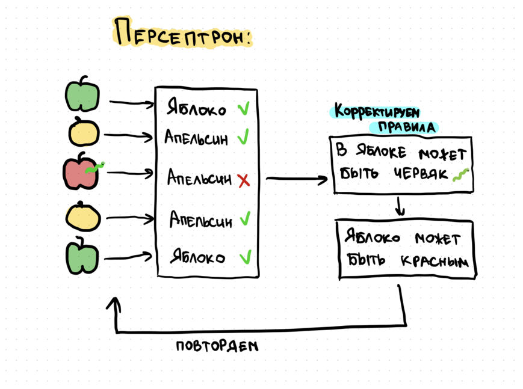
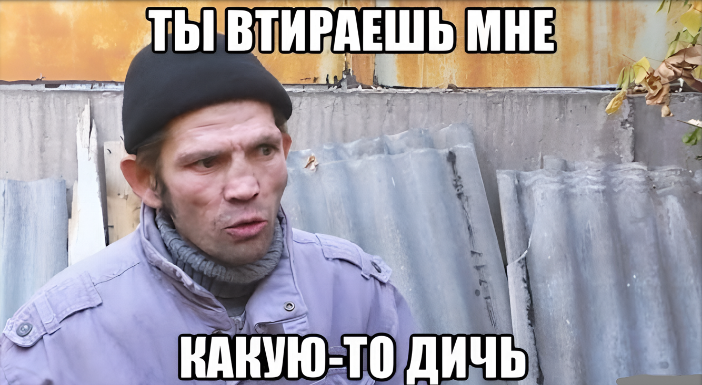
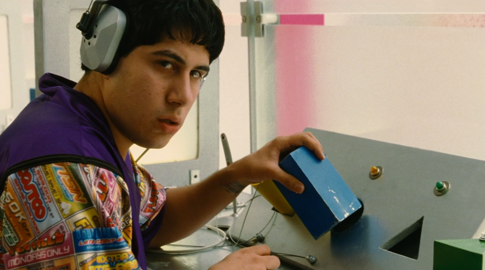
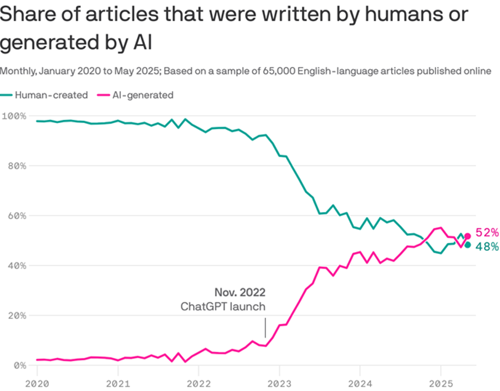
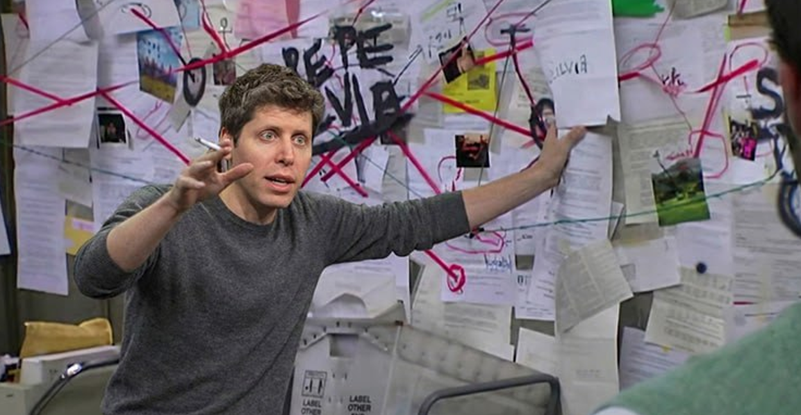
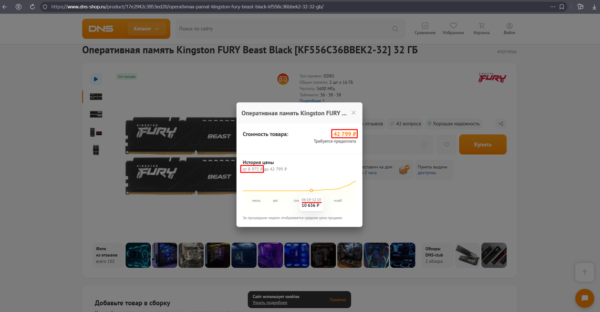
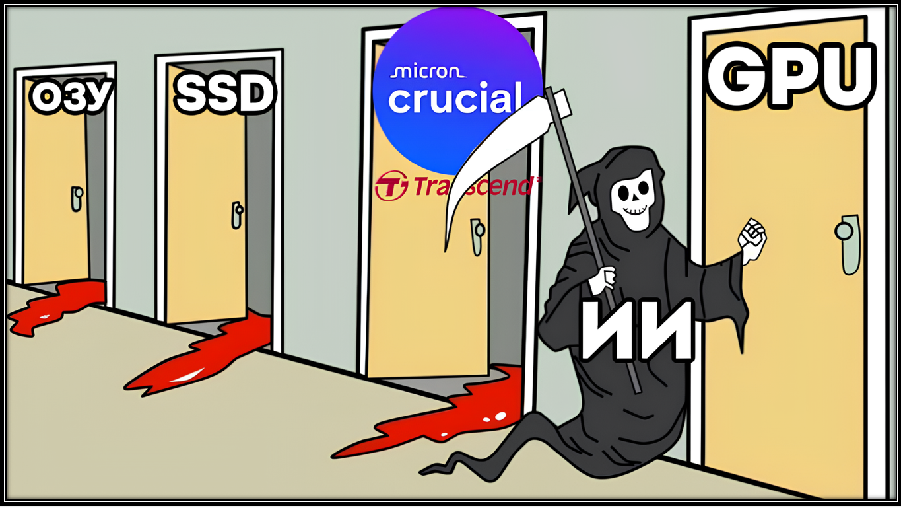

Нейросети: могучий инструмент будущего или надувающийся пузырь обогащения корпораций?🔄
Иронично, но этот доклад я создан без участия НСетей. Использованные материалы и новости написаны людьми, я проверял
Если вы думаете, что НС - изобретение последних лет - это не так! В середине XX века начала формироваться первая концепция НС: пытались создать машину, имитирующую функции человеческого мозга. В 1943-м была предложена математическая модель нейрона. А 1957 году Фрэнк Розенблатт представил персептрон (или же перцептрон). Именно его можно назвать первой практической реализацией НС. Персептрон - это простая модель машинного обучения, которую создали для помощи компьютерам в обучении на разных данных.
 Как это работает: Допустим, хотим обучить персептрон классифицировать изображения на "яблоки" и "апельсины":
- Берём несколько изображений яблок и апельсинов.
- Даём персептрону по одной картинке. Он её обрабатывает и соотносит к яблоку или апельсину.
- Если ответ правильный, ничего не меняем. Если ответ неправильный, то мы корректируем правила внутри персептрона, чтобы в следующий раз он не ошибся.
- Повторяем процесс, пока он не перестаёт ошибаться. Далее мы тестируем персептрон уже с другими изображениями яблок и апельсинов.
В реальности процесс более сложный, это сильно упрощенный пример.
Персептрон - очень базовая модель, но она проложила путь к разработке более совершенных алгоритмов машинного обучения, которые используются сегодня.
Когда я впервые услышал слово Персептрон – подумал, что это название какого-то злого Трансформера
Перенесемся в современность
В конце 20-го создана GPT-3 (или Generative Pretrained Transformer 3) - языковая модель, разработанной OpenAI. А в конце 22-го года выходит ChatGPT и спустя 2 месяца набирает более 100 миллионов пользователей.
С тех пор НСети стали развиваться колоссальными темпами, следить за всеми новостями в этой области едва успеваю, т.к. они идут немыслимым потоком!
ОЧЕНЬ КРАТКО ДЛЯ ЧЕГО СЕГОДНЯ ИСПОЛЬЗУЮТСЯ НС:
- Для анализа данных
- Для бизнеса
- Для науки
- Для программирования
- Для тестирования
- В повседневной жизни Перечислять можно еще очень долго…
А ВОТ НЕСКОЛЬКО КЕЙСОВ, ГДЕ НС УЖЕ УСПЕШНО ПОМОГАЮТ ЧЕЛОВЕКУ, В МИРЕ И В РОССИИ:

- Решение "Задачи 50 лет" - выяснение того, в какую форму складываются белки, известное как «проблема сворачивания белков». В 2020 году AlphaFold (компания Google DeepMind) решила эту "великую задачу". НСеть смогла с высокой точностью предсказывать, как именно будет сворачиваться белковая цепь. Это должно помочь в разработке новых методов лечения различных заболеваний, создания более устойчивых сельскохозяйственных культур и решения других глобальных проблем.
- В 2023-м в Москве первой в стране внедрили двойное чтение маммографических исследований с участием ИИ и врача-рентгенолога, за два года проанализировано почти миллион маммограмм. НСети сначала анализируют изображение, выделяя подозрительные области на снимке, после врач проверяет его и принимает решение. Это экономит тысячи человеко-часов специалистам.
- НСеть поможет сотрудникам МЧС быстрее определять причины пожаров. Применять ИИ планируют как в жилых помещениях, так и на промышленных объектах при оформлении протоколов осмотра места происшествия.
- В проекте «Чистый берег» нейросеть распознаёт мусор по аэрофотоснимкам. С 2024 помогло волонтёрам очистить более 50 км заповедных берегов. В следующем году систему начнут применять ещё в шести национальных парках, заповедниках и на арктических территориях.
- Специалисты МФТИ создали систему «Страж», которая поможет астрономам в анализе и классификации обнаруженных звезд с точностью до 87%.
ПОГОВОРИВ О ПЛЮСАХ НС, ТЕПЕРЬ ПЕРЕЙДЕМ К РИСКАМ И МИНУСАМ:

-
Неточность и «галлюцинации» - НСети могут генерировать неверные или выдуманные факты, при этом представляя их как достоверные! Всегда критически оценивать и 100 раз подумать, перепроверить полученное от Нсети, прежде чем это как-либо использовать. 
-
НСети могут использоваться в злонамеренных целях (например, для взлома), а также возникают вопросы, связанные с авторским правом на сгенерированный контент. Кстати, если используете ИИ в работе – не забывайте анонимизировать все, что касается материалов нашей компании, чтобы сохранить коммерческую тайну!

-
Чрезмерное использование и зависимость от НСетей может привести к тому, что люди перестанут самостоятельно решать задачи и генерировать идеи, критически рассуждать. Особенно опасно для подрастающего поколения – зачем учиться, запоминать и напрягаться, когда в кармане есть ответ на любой вопрос, большинство не потрудится перепроверить достоверность данных. А ведь когда-то ругали поколение ЕГЭ… 
-
НСети не обладают настоящим творческим мышлением, а лишь преобразуют имеющиеся данные. Их решения могут быть шаблонными и лишенными глубокого понимания контекста или абстракции.
-
Уже половина статей в интернете написана ИИ (по данным SEO-аналитиков Graphite). Важный нюанс – в выборку исследования не попали платные статьи и статьи, тщательно отредактированные человеком после обработки ИИ. Возможно, «чистого» ИИ-контента чуть меньше + в топе выдачи Google до сих пор 86% текстов — написанные людьми, благодаря поисковым алгоритмам. 
-
OpenAI не выйдет на прибыльность до 2030 года – в этом году аудитория ChatGPT составила 10% населения мира, и даже если этот показатель достигнет 44% всего взрослого населения, OpenAI так и не сможет выйти на прибыльность к 2030 году. Подписано контрактов на покупку вычислительных мощностей на $1,4 ТРЛН до 2033 года. Но в этом году ожидается лишь $20 млрд выручки — в 70 раз меньше обязательств. Месячная аудитория ChatGPT — это 700–800 млн человек, но платят из них менее 3%. Эти 15–20 миллионов приносят 85–90% всей выручки OpenAI. 
-
Все еще не пузырь?
- OpenAI за $500 миллиардов закупает GPU у Nvidia
- Nvidia инвестирует обратно в OpenAI до $100 миллиардов
- OpenAI заключает облачный контракт с Oracle на $300 миллиардов
- Oracle покупает чипы у Nvidia на десятки миллиардов
- OpenAI договаривается с AMD о GPU мощностью на 6 ГВт, а AMD получает опцион на покупку 160 миллионов акций OpenAI
- Microsoft инвестирует в OpenAI, OpenAI арендует мощности у Microsoft
И так по кругу. Каждая сделка увеличивает капитализацию всех участников, создавая иллюзию бешеного роста рынка. Мое мнение – если (а может и когда) этот пузырь лопнет, мало никому не покажется… Но мы знаем, что часто оплачивают такую музыку как правило не те, кто ее заказывал.

-
Пэт Гелсингер (Бывший глава Intel) заявил, что квантовые вычисления обрушат ИИ-пузырь уже к концу десятилетия - массовый прорыв в квантовых вычислениях завершит нынешнюю ИИ-лихорадку и приведет к вытеснению ИИ-GPU к концу десятилетия (через 5 лет, сколько примерно и занимает деградация железа в датацентрах, которые из новости выше так и не окупятся к этому сроку). Он уверен, что квантовые системы будут постепенно вытеснять графические процессоры.
-
И «на сладкое» - подорожание и дефицит комплектующих (тут быстро пробегусь):
- Оперативная память подорожала в несколько раз за последние 2 месяца 
- OpenAI скупает десктопную память - не только заключает контракты с производителями, но и активно скупает обычные комплекты DDR5 в сетевых магазинах. Стратегия OpenAI направлена на лишение конкурентов возможности получить любую DDR5. То, что страдают обычные пользователи ПК, корпорацию с многомиллиардными контрактами едва ли волнует.
- Компания Micron (более 20% рынка памяти), уходит с рынка потребительской продукции. Теперь компания будет делать память только для дата-центров для обучения и развёртывания ИИ
- Тем временем Samsung и SK Hynix, которые занимают оставшиеся 70% рынка, не собираются повышать объёмы производства, будут просто выжимать максимум прибыли из дефицита, удерживая высокие цены. 
- Transcend приостанавливает поставки твердотельных накопителей (SSD) – производитель с октября не получает чипы NAND от Samsung и SanDisk, потому что они переориентировали свои мощности на обслуживание ИИ
- Crucial всё. Micron отказался от бренда ради ИИ. Компания прекратит продажи SSD и ОЗУ Crucial в ритейле и цифровых магазинах до февраля 2026 года. Решение приняли для того, чтобы сфокусироваться на поддержке ИИ-датацентров.
- Вслед за SSD и ОЗУ подорожали HDD. Сейчас модели, которые ещё полгода назад продавались по 5к, обойдутся в два раза дороже – от 10к рублей. Заявленная причина та же – дефицит памяти.
- Также смартфоны могут заметно подорожать. Из-за глобального дефицита чипов DRAM и NAND себестоимость смартфонов увеличится на 20–25%
И через 5 лет нас ожидает нечто еще более удивительное (а главное положительное), связанное с миром высоких технологий и миром в целом. Ведь с каждым новым крупным изобретением в истории человечества следующая прорывная инновация занимает все меньше времени, а значит мы возможно уже на пороге технологической сингулярности (к добру или не очень)
И В ЗАКЛЮЧЕНИЕ:
Как у любой технологии и инструмента, от ИИ есть (и будет) как польза, так и вред… Одно уже очевидно: НСети - это мощный инструмент, который бурно развивался и продолжит это делать на наших глазах! Уверен, что в ближайшее время они никуда не денутся, поэтому рекомендую каждому, кто не успел к ним прикоснуться, освоить их использование, для личного и профессионального применения. Хотя бы на базовом уровне…